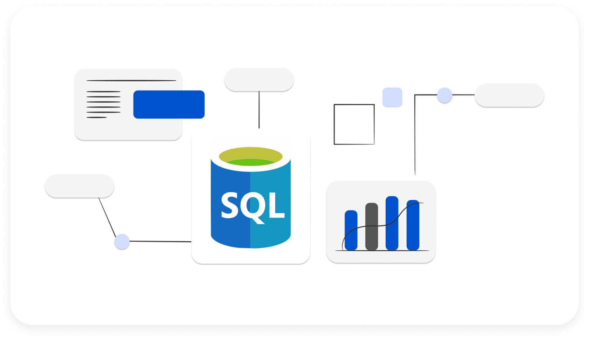
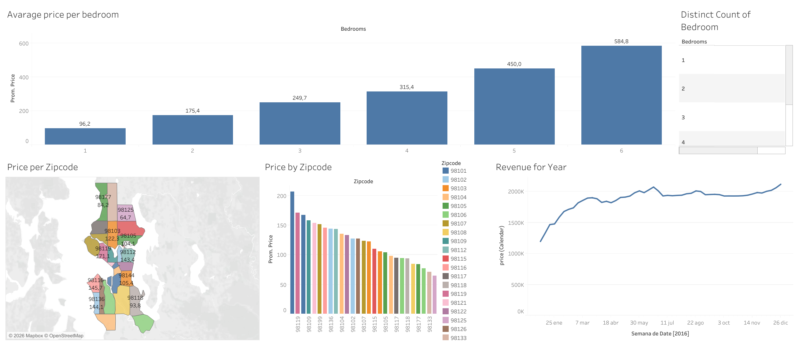
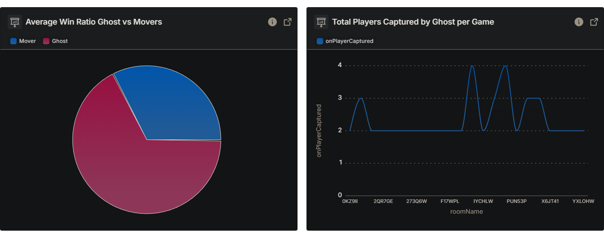

Data Cleaning in SQL
This MySQL project demonstrates data cleaning techniques. A real-world layoffs dataset is imported and meticulously cleaned, addressing duplicates, standardizing entries, and handling null values

This MySQL project demonstrates data cleaning techniques. A real-world layoffs dataset is imported and meticulously cleaned, addressing duplicates, standardizing entries, and handling null values


This project focuses on analyzing a dataset using Excel Pivot Tables to extract insights, summarize key metrics, and transform raw data into structured, decision-ready information.
This repository contains two simple Python scripts: BMI Calculator and Automatic File Sorter.

Tableau data visualization project exploring Airbnb trends, pricing patterns, and geographic distribution insights.

D.E.P.O Analytics is a data analysis project focused on extracting, processing, and visualizing gameplay telemetry from an asymmetrical multiplayer game.
Argentina, Buenos Aires